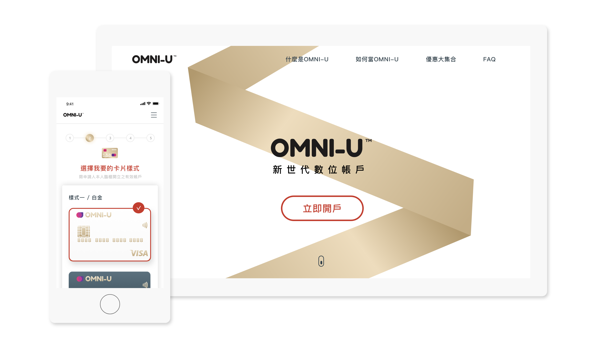
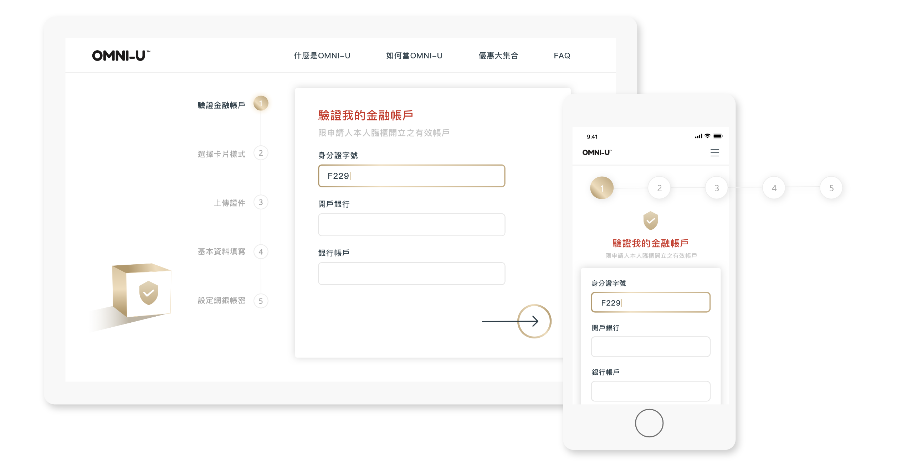
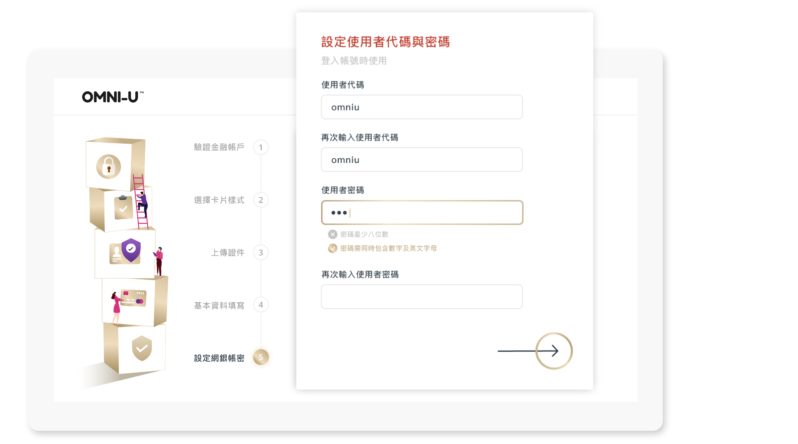
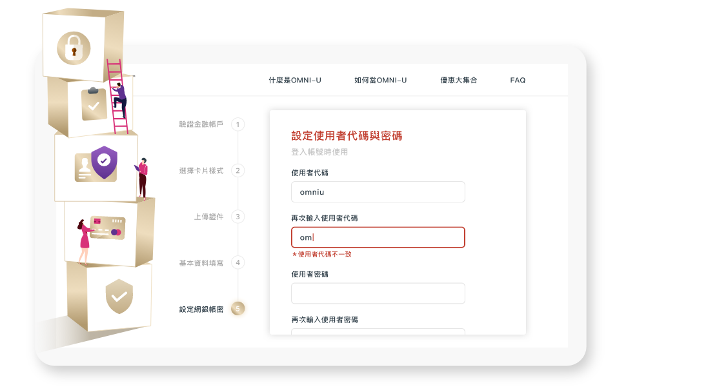

銀行數位存款帳戶 UI Design | 2020
Description:
因近幾年，數位存款帳戶崛起，許多銀行業陸續推出數位帳戶吸引消費者。onboarding 設計將成為品牌的第一門面， 如何在使用者註冊帳戶時，盡可能讓流程順暢無礙並傳達品牌概念，將是此次專案著墨的重點。
Role:
UI Design
Deliverables:
Interactive Prototype
Visual Design
Software:
Sketch
Adobe XD
1. 虎克定律運用：流程分成步驟/進度條設計
根據虎克定律，人在面臨越多選擇時，所要消耗的時間成本越高。 利用進度條明確列出註冊帳戶的流程，降低使用者因為一次處理過多資訊量而感到煩躁甚至跳離的可能性。
2. 七加減二法則：將步驟控制在五個
根據七加減二法則，當使用者操作任務的數量越少，分散的注意力越少，正確率越高。因此我將所有的註冊流程整理後分類為五步驟。
3. 十大易用性原則：預防錯誤/密碼設定提示設計
根據防錯原則，比起提供使用者明確的錯誤訊息，更重要的是如何防止使用者發生錯誤。 因此在設定密碼的欄位設計了提示訊息，提前告知使用者密碼規則，在完成一項時打勾，增加正向訊息的傳遞，減少提示錯誤的機率。 也避免在點擊最後的提交按鈕後收到錯誤提示説密碼不符合要求，導致放棄註冊。
4. 積木堆疊設計
在網頁版中，加入積木堆疊的設計概念，提升使用者對於完成步驟的「期待感」，以及看著積木越疊越高而產生的「成就感」。 將枯燥的申請流程透過有趣的插圖，彷彿讓填寫的時光加速了呢！
